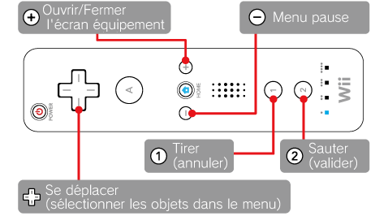
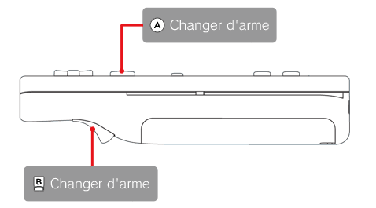

Pour jouer à ce jeu, utilisez la télécommande Wii en position horizontale.


* Les commandes indiquées entre parenthèses ne sont pas utilisées durant le jeu.
* Avec la manette classique, utilisez
le bouton b (x) pour tirer et le bouton a (y) pour sauter. Le bouton L et le bouton R servent à changer d'arme.
* Vous pouvez modifier les boutons de tir et de saut dans les options. |